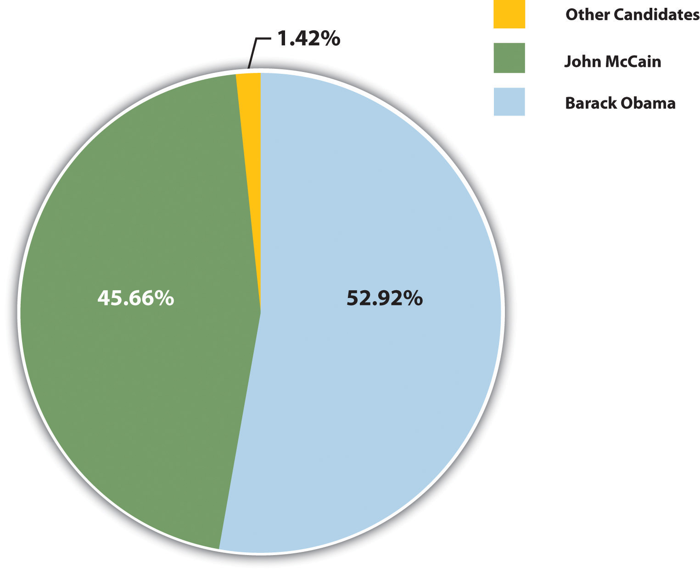
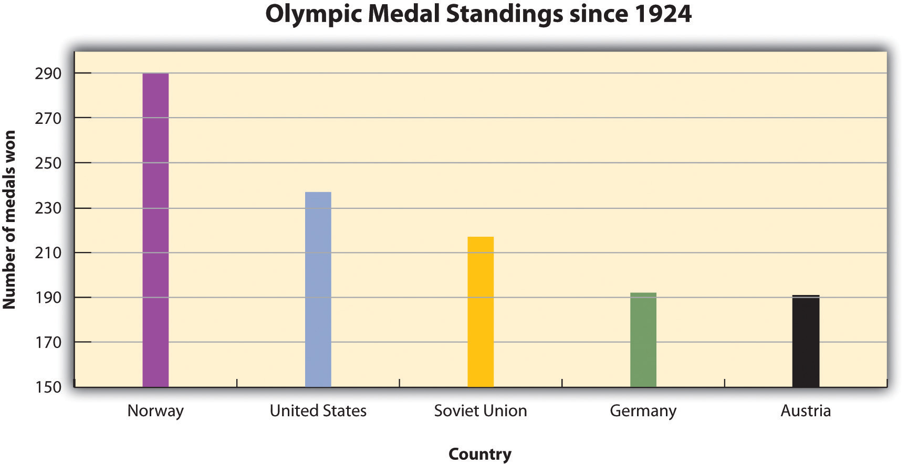
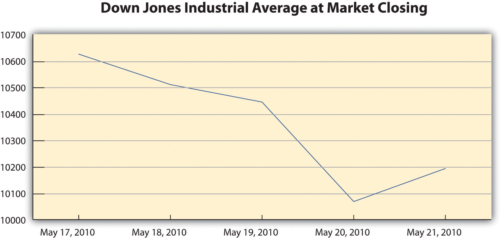

Until now, you have interacted with your audience of readers indirectly, on the page. You have tried to anticipate their reactions and questions as all good writers do. Anticipating the audience’s needs can be tough, especially when you are sitting alone in front of your computer.
When you give a presentation, you connect directly with your audience. For most people, making a presentation is both exciting and stressful. The excitement comes from engaging in a two-way interaction about your ideas. The stress comes from the pressure of presenting your ideas without having a delete button to undo mistakes. Outside the classroom, you may be asked to give a presentation, often at the last minute, and the show must go on. Presentations can be stressful, but planning and preparation, when the time and opportunity are available, can make all the difference.
This chapter covers how to plan and deliver an effective, engaging presentation. By planning carefully, applying some time-honored presentation strategies, and practicing, you can make sure that your presentation comes across as confident, knowledgeable, and interesting—and that your audience actually learns from it. The specific tasks involved in creating a presentation may vary slightly depending on your purpose and your assignment. However, these are the general steps.
Follow these steps to create a presentation based on your ideas:
To deliver a successful presentation, you need to develop content suitable for an effective presentation. Your ideas make up your presentation, but to deliver them effectively, you will need to identify key ideas and organize them carefully. Read the following considerations, which will help you first identify and then organize key ideas:
As with a writing assignment, determining the purpose of your presentation early on is crucial. You want to inform your readers about the topic, but think about what else you hope to achieve.
Are you presenting information intended to move your audience to adopt certain beliefs or take action on a particular issue? If so, you are speaking not only to inform but also to persuade your listeners. Do you want your audience to come away from your presentation knowing how to do something they that they did not know before? In that case, you are not only informing them but also explaining or teaching a process.
Schoolteachers are trained to structure lessons around one or more lesson objectives. Usually the objective, the mission or purpose, states what students should know or be able to do after they complete the lesson. For example, an objective might state, “Students will understand the specific freedoms guaranteed by the First Amendment” or “Students will be able to add two three-digit numbers correctly.”
As a manager, mentor, or supervisor, you may sometimes be required to teach or train other employees as part of your job. Determining the desired outcome of a training session will help you plan effectively. Identify your teaching objectives. What, specifically, do you want your audience to know (for instance, details of a new workplace policy) or be able to do (for instance, use a new software program)? Plan your teaching or training session to meet your objectives.
To plan your presentation, think in terms of three or four key points you want to get across. In a paper, you have the space to develop ideas at length and delve into complex details. In a presentation, however, you must convey your ideas more concisely.
One strategy you might try is to create an outline. What is your main idea? Would your main idea work well as key points for a brief presentation? How would you condense topics that might be too lengthy, or should you eliminate topics that may be too complicated to address in your presentation?
Revisit your presentation assignment, or think of a topic for your presentation. On your own sheet of notebook paper, write a list of at least three to five key ideas. Keep the following questions in mind when listing your key ideas:
After you determine which ideas are most appropriate for your presentation, you will create an outline of those ideas. Your presentation, like a written assignment, should include an introduction, body, and conclusion. These components serve much the same purpose as they do in a written assignment.
Jorge, who wrote the research paper featured in Chapter 11 "Writing from Research: What Will I Learn?", developed the following outline. Jorge relied heavily on this outline to plan his presentation, but he adjusted it to suit the new format.

In Chapter 12 "Writing a Research Paper", you learned techniques for writing an interesting introduction, such as beginning with a surprising fact or statistic, a thought-provoking question or quotation, a brief anecdote that illustrates a larger concept or connects your topic to your audience’s experiences. You can use these techniques effectively in presentations as well. You might also consider actively engaging your audience by having members respond to questions or complete a brief activity related to your topic. For example, you may have your audience respond to a survey or tell about an experience related to your topic.
Incorporating media can also be an effective way to get your audience’s attention. Visual images such as a photograph or a cartoon can invoke an immediate emotional response. A graph or chart can highlight startling findings in research data or statistical information. Brief video or audio clips that clearly reinforce your message and do not distract or overwhelm your audience can provide a sense of immediacy when you plan to discuss an event or a current issue. A PowerPoint presentation allows you to integrate many of these different media sources into one presentation.
With the accessibility provided by the Internet, you can find interesting and appropriate audio and video with little difficulty. However, the clip alone will not sustain the presentation. To keep the audience interested and engaged, you must frame the beginning and end of the clip with your own words.
Jorge completed the introduction part of his outline by listing the key points he would use to open his presentation. He also planned to show various web links early on to illustrate the popularity of the low-carbohydrate diet trend.

The next step is to work with the key ideas you identified earlier. Determine the order in which you want to present these ideas, and flesh them out with important details. Chapter 10 "Rhetorical Modes" discusses several organizational structures you might work with, such as chronological order, comparison-and-contrast structure, or cause-and-effect structure.
How much detail you include will depend on the time allotted for your presentation. Your instructor will most likely give you a specific time limit or a specific slide limit, such as eight to ten slides. If the time limit is very brief (two to three minutes, for instance), you will need to focus on communicating your point of view, main supporting points, and only the most relevant details. Three minutes can feel like an eternity if you are speaking before a group, but the time will pass very quickly. It is important to use it well.
If you have more time to work with—ten minutes or half an hour—you will be able to discuss your topic in greater detail. More time also means you must devote more thought into how you will hold your audience’s interest. If your presentation is longer than five minutes, introduce some variety so the audience is not bored. Incorporate multimedia, invite the audience to complete an activity, or set aside time for a question-and-answer session.
Jorge was required to limit his presentation to five to seven minutes. In his outline, he made a note about where he would need to condense some complicated material to stay within his time limit. He also decided to focus only on cholesterol and heart disease in his discussion of long-term health outcomes. The research on other issues was inconclusive, so Jorge decided to omit this material. Jorge’s notes on his outline show the revisions he has made to his presentation.
You are responsible for using your presentation time effectively to inform your audience. You show respect for your audience by following the expected time limit. However, that does not mean you must fill all of that time with talk if you are giving a face-to-face presentation. Involving your audience can take some of the pressure off you while also keeping them engaged. Have them respond to a few brief questions to get them thinking. Display a relevant photograph, document, or object and ask your classmates to comment. In some presentations, if time allows, you may choose to have your classmates complete an individual or group activity.
The conclusion should briefly sum up your main idea and leave your audience with something to think about. As in a written paper, you are essentially revisiting your thesis. Depending on your topic, you may also ask the audience to reconsider their thinking about an issue, to take action, or to think about a related issue. If you presented an attention-getting fact or anecdote in your introduction, consider revisiting it in your conclusion. Just as you have learned about an essay’s conclusion, do not add new content to the presentation’s conclusion.
No matter how you choose to structure your conclusion, make sure it is well planned so that you are not tempted to wrap up your presentation too quickly. Inexperienced speakers, in a face-to-face presentation, sometimes rush through the end of a presentation to avoid exceeding the allotted time or to end the stressful experience of presenting in public. Unfortunately, a hurried conclusion makes the presentation as a whole less memorable.
Time management is the key to delivering an effective presentation whether it is face-to-face or in PowerPoint. As you develop your outline, think about the amount of time you will devote to each section. For instance, in a five-minute face-to-face presentation, you might plan to spend one minute on the introduction, three minutes on the body, and one minute on the conclusion. Later, when you rehearse, you can time yourself to determine whether you need to adjust your content or delivery.
In a PowerPoint presentation, it is important that your presentation is visually stimulating, avoids information overload by limiting the text per slide, uses speaker notes effectively, and uses a font that is visible on the background (e.g., avoid white letters on a light background or black letters on a dark background).
Work with the list you created in Note 14.4 "Exercise 1" to develop a more complete outline for your presentation. Make sure your outline includes the following:
You may already have some ideas for how to incorporate visual and audio media in your presentation. If not, review your outline and begin thinking about where to include media. Presenting information in a variety of formats will help you keep your audience’s interest.
Delivering your presentation as a slideshow is one way to use media to your advantage. As you speak, you use a computer and an attached projector to display a slideshow of text and graphics that complement the speech. Your audience will follow your ideas more easily, because you are communicating with them through more than one sense. The audience hears your words and also sees the corresponding visuals. A listener who momentarily loses track of what you are saying can rely on the slide to cue his or her memory.
To set up your presentation, you will need to work with the content of your outline to develop individual slides. Each slide should focus on just a few bullet points (or a similar amount of content presented in a graphic). Remember that your audience must be able to read the slides easily, whether the members sit in the front or the back of the room. Avoid overcrowding the slides with too much text.
Using presentation software, such as PowerPoint, allows you to incorporate graphics, sounds, and even web links directly into your slides. You can also work with available styles, color schemes, and fonts to give your presentation a polished, consistent appearance. Different slide templates make it easy to organize information to suit your purpose. Be sure your font is visible to you audience. Avoid using small font or colored font that is not visible against your background.
PowerPoint and similar visual representation programs can be effective tools to help audiences remember your message, but they can also be an annoying distraction to your speech. How you prepare your slides and use the tool will determine your effectiveness.
PowerPoint is a slideware program that you have no doubt seen used in class, seen in a presentation at work, or perhaps used yourself to support a presentation. PowerPoint and similar slideware programs provide templates for creating electronic slides to present visual information to the audience, reinforcing the verbal message. You will be able to import or cut and paste words from text files, images, or video clips to create slides to represent your ideas. You can even incorporate web links. When using any software program, it is always a good idea to experiment with it long before you intend to use it; explore its many options and functions, and see how it can be an effective tool for you.
At first, you might be overwhelmed by the possibilities, and you might be tempted to use all the bells, whistles, and sound effects, not to mention the tumbling, flying, and animated graphics. If used wisely, a dissolve or key transition can be like a well-executed scene from a major motion picture and lead your audience to the next point. But if used indiscriminately, it can annoy the audience to the point where they cringe in anticipation of the sound effect at the start of each slide. This danger is inherent in the tool, but you are in charge of it and can make wise choices that enhance the understanding and retention of your information.
The first point to consider is which visual aid is the most important. The answer is you, the speaker. You will facilitate the discussion, give life to the information, and help the audience correlate the content to your goal or purpose. You do not want to be in a position where the PowerPoint presentation is the focus and you are on the side of the stage simply helping the audience follow along. Slides should support you in your presentation, rather than the other way around. Just as there is a number one rule for handouts (do not pass them out at the start of your presentation), there is also one for PowerPoint presentations: do not use PowerPoint slides as a read-aloud script for your speech. The PowerPoint slides should amplify and illustrate your main points, not reproduce everything you are going to say.
Your pictures are the second area of emphasis you will want to consider. The tool will allow you to show graphs, charts and illustrate relationships that words may only approach in terms of communication, but your verbal support of the visual images will make all the difference. Dense pictures or complicated graphics will confuse more than they clarify. Choose clear images that have an immediate connection to both your content and the audience, tailored to their specific needs. After the images, consider using only key words that can be easily read to accompany your pictures. The fewer words the better. Try to keep each slide to a total word count of less than ten words. Do not use full sentences. Using key words provides support for your verbal discussion, guiding you as well as your audience. The key words can serve as signposts or signal words related to key ideas.
A natural question at this point is, How do I communicate complex information simply? The answer comes with several options. The visual representation on the screen is for support and illustration. Should you need to communicate more technical, complex, or in-depth information in a visual way, consider preparing a handout to distribute at the conclusion of your speech. You may also consider using a printout of your slide show with a section for taking notes, but if you distribute it at the beginning of your speech, you run the risk of turning your presentation into a guided reading exercise and possibly distracting or losing members of the audience. Everyone reads at a different pace and takes notes in their own way. You do not want to be in the position of going back and forth between slides to help people follow along.
Another point to consider is how you want to use the tool to support your speech and how your audience will interpret its presentation. Most audiences wouldn’t want to read a page of text—as you might see in this book—on the big screen. They will be far more likely to glance at the screen and assess the information you present in relation to your discussion. Therefore, it is key to consider one main idea, relationship, or point per slide. The use of the tool should be guided with the idea that its presentation is for the audience’s benefit, not yours. People often understand pictures and images more quickly and easily than text, and you can use this to your advantage, using the knowledge that a picture is worth a thousand words.
Even if you do not use a slideshow to complement your presentation, you can include visual media to support and enhance your content. Visual media are divided into two major categories: images and informational graphics.
Image-based media, such as photographs or videos, often have little or no accompanying text. Often these media are more powerful than words in getting a message across. Within the past decade, the images associated with major news stories, such as the Indian Ocean tsunami of 2004, the Abu Ghraib prison abuses from 2004 to 2006, and the 2010 earthquake in Haiti, have powerfully affected viewers’ emotions and drawn their attention to these news stories.
Figure 14.1

Even if your presentation addresses a less dramatic subject, you can still use images to draw in your audience. Consider how photographs, an illustration, or a video might help your audience connect with a particular person or place or bring a historical event to life. Use visual images to support descriptions of natural or man-made phenomena. What ideas lend themselves to being explained primarily through images?
In addition, consider how you might incorporate informational graphics in your presentation. Informational graphics include diagrams, tables, pie charts, bar and line graphs, and flow charts. Informational graphics usually include some text and often work well to present numerical information. Consider using them if you are presenting statistics, comparing facts or data about several different groups, describing changes over time, or presenting a process.
Although audio media are not as versatile as visual media, you may wish to use them if they work well with your particular topic. If your presentation discusses trends in pop music or analyzes political speeches, playing an audio clip is an obvious and effective choice. Clips from historical speeches, radio talk shows, and interviews can also be used, but extended clips may be ineffective with modern audiences. Always assess your audience’s demographics and expectations before selecting and including audio media.
Review the outline you created in Note 14.11 "Exercise 2". Complete the following steps:
Figure 14.2

When you make a presentation, you are giving a performance of sorts. It may not be as dramatic as a play or a movie, but it requires smooth coordination of several elements—your words, your gestures, and any media you include. One way to ensure that the performance goes smoothly is to annotateTo add comments or notes to a document. your presentation ahead of time.
To annotate means to add comments or notes to a document. You can use this technique to plan how the different parts of your presentation will flow together. For instance, if you are working with slides, add notes to your outline indicating when you will show each slide. If you have other visual or audio media to include, make a note of that, too. Be as detailed as necessary. Jotting “Start video at 3:14” can spare you the awkwardness of searching for the right clip during your presentation.
In the workplace, employees are often asked to deliver presentations or conduct a meeting using standard office presentation software. If you are using presentation software, you can annotate your presentation easily as you create your slides. Use the notes feature at the bottom of the page to add notes for each slide. As you deliver your presentation, your notes will be visible to you on the computer screen but not to your audience on the projector screen.
In a face-to-face presentation, make sure your final annotated outline is easy to read. It will serve to cue you during your presentation, so it does not need to look polished, as long as it is clear to you. Double space the text. Use a larger-than-normal font size (14 or 16 points) if that will make it easier for you to read. Boldface or italics will set off text that should be emphasized or delivered with greater emotion. Write out main points, as well as your opening and closing remarks, in complete sentences, along with any material you want to quote verbatim. Use shorter phrases for supporting details. Using your speaker notes effectively will help you deliver an effective presentation. Highlighting, all capital letters, or different-colored font will help you easily distinguish notes from the text of your speech. Read Jorge’s annotated outline.

Some students prefer to write out the full text of their face-to-face presentation. This can be a useful strategy when you are practicing your delivery. However, keep in mind that reading your text aloud, word for word, will not help you capture and hold your audience’s attention. Write out and read your speech if that helps you rehearse. After a few practice sessions, when you are more comfortable with your material, switch to working from an outline. That will help you sound more natural when you speak to an audience.
In a PowerPoint presentation, remember to have your slides in logical sequential order. Annotating your presentation before submitting it to your audience or your instructor will help you check for order and logical transitions. Too much text or data may confuse your audience; strive for clarity and avoid unnecessary details. Let the pictures or graphics tell the story but do not overload your slideshow with visuals. Be sure your font is visible. Look for consistency in the time limit of your presentation to gauge your level of preparedness.
Begin to annotate your outline. (You will probably add more notes as you proceed, but including some annotations now will help you begin pulling your ideas together.) Mark your outline with the following information:

Good communication is a multisensory experience. Children first learning how to read often gravitate toward books with engaging pictures. As adults, we graduate to denser books without pictures, yet we still visualize ideas to help us understand the text. Advertisers favor visual media—television, magazines, and billboards—because they are the best way to hook an audience. Websites rely on color, graphics, icons, and a clear system of visual organization to engage Internet surfers.
Bringing visuals into a presentation adds color, literally and figuratively. There is an art to doing it well. This section covers how to use different kinds of visual aids effectively.
Good writers make conscious choices. They understand their purpose and audience. Every decision they make on the page, from organizing an essay to choosing a word with just the right connotations, is made with their purpose and audience in mind.
The same principle applies to visual communication. As a presenter, you choose the following:
Your goal is to use visual media to support and enhance your presentation. At the same time, you must make sure these media do not distract your audience or interfere with getting your point across. Your ideas, not your visuals, should be the focus.
As you develop the visual side of your presentation, you will follow a process much like the process you follow when you write. You will brainstorm ideas, form an organizational plan, develop drafts, and then refine and edit your work. The following sections provide guidelines to help you make good decisions throughout the process.
To help you get a sense of what makes visual media work, think about what does not work. Try to recall occasions when you have witnessed the following visual media failures:
In each case, the problem is that the media creator did not think carefully enough about the purpose and audience. The purpose of images, color, or flashing text on a website is to attract attention. Overusing these elements defeats the purpose because the viewer may become overwhelmed or distracted. Tables, charts, and graphs are intended to simplify complex information, but without clear labels and legible text, they will confuse the audience.
In contrast, effective visual elements are chosen or created with the purpose and audience in mind. Although a photo shoot for a magazine article might result in dozens of images, editors choose those few that work best with the article. Web designers and video game creators have an audience test their products before they are released, to ensure that people will understand how to use them. Understanding the function of different visual aids will help you use them with purpose.
Visual aids fall into two main categories—images and informational graphics. Images include photographs, illustrations and clip art, and video footage. Informational graphics include tables, charts, bar graphs, and line graphs.
These visual aids serve two purposes: to add emotional impact to your presentation and to organize information more clearly. With that in mind, read to find out how specific types of visual aids achieve those purposes.
A striking photograph can capture your audience’s attention far more successfully than words can. Consider including photographs at the beginning or end of your presentation to emphasize your main ideas or to accompany a particularly important point in the body of your presentation. Remember that, as with other types of graphics, less is often more. Two or three well-chosen photographs are more effective than a dozen mediocre ones.
When you choose photographs, ask yourself these questions:
To illustrate the sense of helplessness people felt in the midst of tragedy, a student could use a photograph that shows fear, weariness, or defeat on the face of the photograph’s subject.
Illustrations, such as editorial or political cartoons, serve much the same purpose as photographs. Because an illustration does not capture a moment in time the way a photo does, it may have less impact. However, depending on your topic and the effect you want to achieve, illustrations can still be very useful. Use the same criteria for choosing photographs to help you choose illustrations.
The style of an illustration or photograph affects viewers just as the content does. Keep this in mind if you are working with the stock images available in office software programs. Many of these images have a comical tone. This may be fine for some topics—for instance, a presentation on television shows for children. However, if you need to project a more serious tone, make sure you choose images to suit that purpose. Many free (or reasonably priced) image banks are available online.
Even more than photographs, video footage can create a sense of immediacy, especially if your video includes sound. Showing a brief video clip can help your audience feel as if they are present at an important event, connect with a person being interviewed, or better understand a process. Again, ask yourself the following questions to ensure you are using the footage well:
Informational graphics, such as tables, charts, and graphs, do not provoke the same response that images do. Nevertheless, these graphics can have a powerful impact. Their primary purpose is to organize and simplify information.
Tables are effective when you must classify information and organize it in categories. Tables are an especially good choice when you are presenting qualitative dataData or statistics that are not strictly numerical. that are not strictly numerical. Table 14.1 "Example of Qualitative Data Table" was created for a presentation discussing the subprime mortgage crisis. It presents information about people who have held powerful positions both in the government and at one of the investment banking firms involved in the subprime mortgage market.
Table 14.1 Example of Qualitative Data Table
| Name | Role(s) at Goldman Sachs | Years Active | Government Role(s) | Years Active |
|---|---|---|---|---|
| Henry Paulson | Chief operating officer | 1994–98 | US secretary of the treasury | 2006–9 |
| Chief executive officer | 1998–2006 | |||
| Robert Rubin | Vice chairman and co-chief operating officer | 1987–90 | Assistant to the president for economic policy and director, National Economic Council | 1993–95 |
| Co-chairman and co-senior partner | 1990–92 | US secretary of the treasury | 1995–99 | |
| Stephen Friedman | Co-chief operating officer | 1987–90 | Assistant to the president for economic policy and director, National Economic Council | 2002–5 |
| Co-chairman | 1990–92 | |||
| Chairman | 1992–94 |
Sources: http://www.rollingstone.com/politics/news/%3Bkw=%5B3351,11459%5D; http://www.nytimes.com/2008/10/19/business/19gold.html; http://topics.nytimes.com/top/reference/timestopics/people/p/henry_m_jr_paulson/index.html?inline=nyt-per; http://topics.nytimes.com/top/reference/timestopics/people/r/robert_e_rubin/index.html?inline=nyt-per, http://www.nytimes.com/2002/12/13/us/man-in-the-news-economic-adviser-from-other-side-of-the-deficit-stephen-friedman.html; http://news.bbc.co.uk/2/hi/business/342086.stm.
If you are working with numerical information, consider whether a pie chart, bar graph, or line graph might be an effective way to present the content. A table can help you organize numerical information, but it is not the most effective way to emphasize contrasting data or to show changes over time.
Pie charts are useful for showing numerical information in percentages. For example, you can use a pie chart to represent presidential election results by showing what percentage of voters voted for the Democratic presidential candidate, the Republican candidate, and candidates from other political parties.
Figure 14.5
Bar graphs work well when you want to show similarities and differences in numerical data. Horizontal or vertical bars help viewers compare data from different groups, different time periods, and so forth. For instance, the bar graph in Figure 14.6 allows the viewer to compare data on the five countries that have won the most Olympic medals since the modern games began in 1924: Norway, the United States, the former Soviet Union, Germany, and Austria. Bar graphs can effectively show trends or patterns in data as well.
Figure 14.6
Like bar graphs, line graphs show trends in data. Line graphs are usually used to show trends in data over time. For example, the line graph in Figure 14.7 shows changes in the Dow Jones Industrial Average—an economic index based on trading information about thirty large, US-based public companies. This graph shows where the Dow closed at the end of each business day over a period of five days.
Figure 14.7
In this exercise, you will begin to refine your ideas for incorporating media into your presentation. Complete the following steps on your own sheet of paper.
You will include original visual aids in your presentation to add interest, present complex information or data more clearly, or appeal to your audience’s emotions. You may wish to create some visual aids by hand—for instance, by mounting photographs on poster board for display. More likely, however, you will use computer-generated graphics.
Computer-generated visual aids are easy to create once you learn how to use certain office software. They also offer greater versatility. You can print hard copies and display them large or include them in a handout for your audience. Or, if you are working with presentation software, you can simply insert the graphics in your slides.
Regardless of how you proceed, keep the following guidelines in mind:
You can use standard office software to create simple graphics easily. The following guidelines describe how to work with word-processing software and presentation software.
Most personal computers come equipped with some basic image-editing software, and many people choose to purchase more advanced programs as well. You can upload photographs from a digital camera (or in some cases, a cell phone) or scan and upload printed photographs. The images can then be edited and incorporated into your presentation. Be sure to save all of your images in one folder for easy access.
To create a table within a word-processing document consult your software program’s help feature or an online tutorial. Once you have created the table, you can edit and make any additional changes. Be sure that the table has no more than six to seven rows or columns because you do not want to compromise the size of the text or the readability. Aligning with precision will help your table look less crowded. Also, the row and column titles should spell out their contents.
Figure 14.8

Pie charts and bar and line graphs can also be created using standard office software. Although you can create these graphics within a document, you will need to work with both your word-processing application and your spreadsheet application to do so. The graph should visually explain the data using colors, titles, and labels. The use of color will help the audience distinguish information; however, avoid colors that are hard on the eyes, such as lime green or hot pink. The title should clearly state what the graph explains. Lastly, avoid using acronyms in the titles and other labels.
If you plan to work only with hard copy graphics during your presentation, you may choose to create them as word-processing documents. However, if you are using presentation software, you will need to choose one of the following options:
Standard office presentation software allows you to create informational graphics in much the same way you would create them within a word-processing application. Keep the formatting palette, a menu option that allows you to customize the graphic, open while you use the software. The formatting menu provides options for inserting other types of graphics, such as pictures and video. You may insert pictures from an image bank available within the program, or insert images or video from your own desktop files. Shape your use of multimedia in accordance with the message your presentation is trying to convey, the purpose, and your audience.
Most of the time, using computer-generated graphics is more efficient than creating them by hand. Using office software programs helps give your graphics a polished appearance while also teaching you skills that are useful in a variety of jobs. However, it may make sense to use hand-created visual aids in some cases—for instance, when showing a 3-D model would be effective. If you follow this route, be sure to devote extra time to making sure your visual aids are neat, legible, and professional.
Flip charts are inexpensive and quick visual aids used during face-to-face presentations. The flip chart can be prepared before, as well as during, the presentation. Each sheet of paper should contain one theme, idea, or sketch and must be penned in large letters to be seen by audience members farthest away from the speaker.
Any media you incorporate should include a caption or other explanatory text. A captionA brief (one to two sentences) description or explanation of a visual image. is a brief, one- to two-sentence description or explanation of a visual image. Make sure your captions are clear, accurate, and to the point. Use full sentences when you write them.
Captions should always be used with photographs, and in some cases, they can be useful for clarifying informational graphics, which represent qualitative data visually. However, informational graphics may not require a caption if the title and labels are sufficiently clear. For other visual media, such as video footage, providing explanatory text before or after the footage will suffice. The important thing is to make sure you always include some explanation of the media.
In this exercise, you will begin to develop visual aids for your presentation. Complete the steps in this exercise—and enjoy the chance to be creative. Working with visuals can be a pleasant way to take a break from the demands of writing.
Collaboration
Please share the first version of your visual aids with a classmate. Examine what they have produced. On a separate piece of paper, note both the elements that catch your attention and those that would benefit from clarification. Return and compare notes.
Regardless of how you create your visual aids, be sure to test-drive them before you deliver your presentation. Edit and proofread them, and if possible, show them to someone who can give you objective feedback. Use the following checklist.
Visual Aid Evaluation Checklist
Office software includes many options for personalizing a presentation. For instance, you can choose or create a theme and color scheme, modify how one slide transitions to the next, or even include sound effects. With so many options, students and employees sometimes get carried away. The result can seem amateurish and detract from, rather than enhance, your presentation.
Remember, you are delivering a presentation, not producing a movie. Use the customization options to help give your presentations a consistent, polished, appearance. However, do not let these special effects detract from the substance of your slides.
Depending on your topic, you may be able to find images and other graphics you can use instead of creating your own. For instance, you might use photographs from a reputable news source or informational graphics created by a government agency. If you plan to use visual aids created by others, keep the following guidelines in mind:
You will probably find it most efficient to use the Internet to search for visual aids. Many students begin by typing keywords into a search engine to locate related images. However, this search technique is not necessarily efficient, for several reasons:
A more efficient strategy is to identify a few sources that are likely to have what you are looking for, and then search within those sites. For instance, if you need a table showing average life expectancy in different countries, you might begin with the website of the World Health Organization. If you hope to find images related to current events, news publications are an obvious choice. The Library of Congress website includes many media related to American history, culture, and politics.
Searching this way has the following advantages:
If you do choose to use a search engine to help you locate visual media, make sure you use it wisely. Begin with a clear idea of what you are looking for. Use the advanced search settings to narrow your search. When you locate a relevant image, do not download it immediately. Read the page or site to make sure you understand the image in context. Finally, read the site’s copyright or terms of use policy—usually found at the bottom of the home page—to make sure you may use the material.
If you are unable to find what you are looking for on the Internet consider using print sources of visual media. You may choose to mount these for display or scan them and incorporate the files into an electronic presentation. (Scanning printed pages may lower the quality of the image. However, if you are skilled at using photo-editing software, you may be able to improve the quality of the scanned image.)
If you are working with images, audio, or video footage available online, you may wish to insert a link within your presentation. Then, during your presentation, you can simply click the link to open the website in a separate window and toggle between windows to return to your presentation slides.
To insert a hyperlink within your presentation, click on insert in the toolbar and then select hyperlink from the menu. Doing so will open a dialogue box where you can paste your link and modify the accompanying display text shown on your slide.
Before you download (or scan) any visual media, make sure you have the right to use it. Most websites state their copyright and terms of use policy on their home page. In general, you may not use other people’s visual media for any commercial purpose without contacting the copyright holder to obtain permission and pay any specified fees.
Copyright restrictions are somewhat more ambiguous when you wish to download visual media for educational uses. Some educational uses of copyrighted materials are generally considered fair useA legitimate use of brief quotations from source material to support and develop a writer’s ideas. This includes the use of other copyrighted media, even though the user has not formally requested the copyright holder’s permission to reproduce the media. Many educational uses of visual media are generally considered fair use as long as the user scrupulously follows certain guidelines.—meaning that it is legally and ethically acceptable to use the material in your work. However, do not assume that because you are using the media for an educational purpose, you are automatically in the clear. Make sure your work meets the guidelines in the following checklist. If it does, you can be reasonably confident that it would be considered fair use in a court of law and always give credit to the source.
Media Fair Use Checklist
By following these guidelines, you are respecting the copyright holder’s right to control the distribution of the work and to profit from it.
In some fields, such as teaching, job applicants often submit a professional portfolio to a prospective employer. Recent college graduates may include relevant course work in their portfolios or in applications to graduate school. What should you do if your course work uses copyrighted visual media?
This use of media is acceptable according to fair use guidelines. Even though you are using the work for your personal professional advancement, it is not considered an infringement on copyright as long as you follow the additional guidelines listed in the previous checklist.
As you conduct your research, make sure you document sources as you proceed. Follow the guidelines when you download images, video, or other media from the Internet or capture media from other sources. Keep track of where you accessed the media and where you can find additional information about it. You may also provide a references page at the end of the presentation to cite not only media and images but also the information in the text of your presentation. See Chapter 13 "APA and MLA Documentation and Formatting" for more information on creating a reference page.
Write captions or other explanatory text for visual media created by others, just as you would for media you created. Doing so helps keep your audience informed. It also helps ensure that you are following fair use guidelines by presenting the media with your commentary, interpretation, or analysis. In your caption or elsewhere in your presentation, note the source of any media you did not create yourself. You do not need to provide a full bibliographical citation, but do give credit where it is due.
In this exercise, you will locate visual aids created by others and continue developing the work you began earlier. Complete these steps.
Take some time now to review how you will integrate the visual and verbal components of your presentation.
By this time, you have already completed much of the preparation for your presentation. You have organized your ideas and planned both the textual and visual components of your presentation. Still, you may not feel quite ready to speak in front of a group.
Public speaking is stressful. In fact, some researchers have found that a large percentage of people surveyed rate public speaking as their number one fear. Most people feel at least a little bit nervous at the prospect of public speaking.
At the same time, it is an increasingly necessary skill in the workplace. A human resource manager presents company policies and benefits plans to large groups of employees. An entrepreneur presents the idea for a new business to potential investors. A nurse might chair a staff meeting to introduce new hospital procedures. A police officer might present crime-prevention tips at a community meeting. In some fields, such as training and teaching, speaking in public is a regular job requirement.
In this section, you will learn strategies for becoming a confident, effective speaker. You have already taken the major steps toward making your presentation successful, as a result of the content planning you did in Chapter 14 "Creating Presentations: Sharing Your Ideas", Section 14.1 "Organizing a Visual Presentation" and Section 14.2 "Incorporating Effective Visuals into a Presentation". Now, it is time to plan and practice your delivery.
Think about times you have been part of the audience for a speech, lecture, or other presentation. You have probably noticed how certain traits and mannerisms work to engage you and make the experience enjoyable. Effective speakers project confidence and interest in both their audience and their subject matter. They present ideas clearly and come across as relaxed but in control.
In contrast, less effective speakers may seem anxious or, worse, apathetic. They may be difficult to hear or understand, or their body language may distract from their message. They have trouble making a connection with their audience. This can happen even when the speaker knows his or her material and has prepared effective visual aids.
In both cases, two factors contribute to your overall impression of the speaker: voice and body language. The following sections discuss specific points to focus on.
Most people do not think much about how their voices come across in everyday conversations. Talking to other people feels natural. Unfortunately, speaking in public does not, and that can affect your voice. For instance, many people talk faster when they give presentations, because they are nervous and want to finish quickly. In addition, some traits that do not matter too much in ordinary conversation, such as a tendency to speak quietly, can be a problem when speaking to a group. Think about the characteristics discussed in the following section and how your own voice might come across.
One quality of a good speaking voice is resonanceIn public speaking, the strength, depth, and force of someone’s voice., meaning strength, depth, and force. This word is related to the word resonate. Resonant speech begins at the speaker’s vocal cords and resonates throughout the upper body. The speaker does not simply use his or her mouth to form words, but instead projects from the lungs and chest. (That is why having a cold can make it hard to speak clearly.)
Some people happen to have powerful, resonant voices. But even if your voice is naturally softer or higher pitched, you can improve it with practice.
EnunciationHow a speaker articulates words. Good speakers enunciate clearly. refers to how clearly you articulate words while speaking. Try to pronounce words as clearly and accurately as you can, enunciating each syllable. Avoid mumbling or slurring words. As you rehearse your presentation, practice speaking a little more slowly and deliberately. Ask someone you know to give you feedback.
Volume is simply how loudly or softly you speak. Shyness, nervousness, or overenthusiasm can cause people to speak too softly or too loudly, which may make the audience feel frustrated or put off. Here are some tips for managing volume effectively:
PitchHow high or low a speaker’s voice is. refers to how high or low a speaker’s voice is. The overall pitch of people’s voices varies among individuals. We also naturally vary our pitch when speaking. For instance, our pitch gets higher when we ask a question and often when we express excitement. It often gets lower when we give a command or want to convey seriousness.
A voice that does not vary in pitch sounds monotonous, like a musician playing the same note repeatedly. Keep these tips in mind to manage pitch:
PaceThe speed or rate at which you speak. is the speed or rate at which you speak. Speaking too fast makes it hard for an audience to follow the presentation. The audience may become impatient.
Many less experienced speakers tend to talk faster when giving a presentation because they are nervous, want to get the presentation over with, or fear that they will run out of time. If you find yourself rushing during your rehearsals, try these strategies:
If, on the other hand, your pace seems sluggish, you will need to liven things up. A slow pace may stem from uncertainty about your content. If that is the case, additional practice should help you. It also helps to break down how much time you plan to spend on each part of the presentation and then make sure you are adhering to your plan.
Pace affects not only your physical presentation but also the point of view; slowing down the presentation may allow your audience to further comprehend and consider your topic. Pace may also refer to the rate at which PowerPoint slides appear. If either the slide or the animation on the slide automatically appears, make sure the audience has adequate time to read the information or view the animation before the presentation continues.
ToneIn writing, a writer’s attitude toward his or her subject and audience. In public speaking, this term refers to the emotion a speaker conveys. is the emotion you convey when speaking—excitement, annoyance, nervousness, lightheartedness, and so forth. Various factors, such as volume, pitch, and body language, affect how your tone comes across to your audience.
Before you begin rehearsing your presentation, think about what tone is appropriate for the content. Should you sound forceful, concerned, or matter-of-fact? Are there places in your presentation where a more humorous or more serious tone is appropriate? Think about the tone you should project, and practice setting that tone.
In this exercise, you will work on refining the oral delivery of the annotated outline you developed in Note 14.17 "Exercise 4" of Section 14.1 "Organizing a Visual Presentation".
The nonverbal content of a presentation is just as important as the verbal delivery. A person’s body languageNonverbal cues, such as eye contact, facial expressions, posture, gestures, and movement, that convey a message to a speaker’s audience.—eye contact, facial expressions, posture, gestures, and movement—communicates a powerful message to an audience before any words are spoken.
People interpret and respond to each other’s body language instinctively. When you talk to someone, you notice whether the other person is leaning forward or hanging back, nodding in agreement or disagreement, looking at you attentively or looking away. If your listener slouches, fidgets, or stares into space, you interpret these nonverbal cues as signs of discomfort or boredom. In everyday conversations, people often communicate through body language without giving it much conscious thought. Mastering this aspect of communication is a little more challenging, however, when you are giving a presentation. As a speaker, you are onstage. It is not easy to see yourself as your audience sees you.
Think about times you have been part of a speaker’s audience. You have probably seen some presenters who seemed to own the room, projecting confidence and energy and easily connecting with the audience. Other presenters may have come across as nervous, gloomy, or disengaged. How did body language make a difference?
Three factors work together powerfully to convey a nonverbal message: eye contact, posture, and movement.
“Maintain eye contact” is a common piece of public-speaking advice—so common it may sound elementary and clichéd. Why is that simple piece of advice so hard to follow?
Maintaining eye contact may not be as simple as it sounds. In everyday conversation, people establish eye contact but then look away from time to time, because staring into someone’s eyes continuously feels uncomfortably intense. Two or three people conversing can establish a comfortable pattern of eye contact. But how do you manage that when you are addressing a group?
The trick is to focus on one person at a time. Zero in on one person, make eye contact, and maintain it just long enough to establish a connection. (A few seconds will suffice.) Then move on. This way, you connect with your audience, one person at a time. As you proceed, you may find that some people hold your gaze and others look away quickly. That is fine, as long as you connect with people in different parts of the room.
Pay attention to your facial expressions as well. If you have thought about how you want to convey emotion during different parts of your presentation, you are probably already monitoring your facial expressions as you rehearse. Be aware that the pressure of presenting can make your expression serious or tense without your realizing it.
If you are speaking to a very large group, it may be difficult to make eye contact with each individual. Instead, focus on a smaller group of persons or one row of people at time. Look in their direction for a few seconds and then shift your gaze to another small group in the room.
While eye contact establishes a connection with your audience, your posture establishes your confidence. Stand straight and tall with your head held high to project confidence and authority. Slouching or drooping, on the other hand, conveys timidity, uncertainty, or lack of interest in your own presentation.
It will not seem natural, but practice your posture in front of a mirror. Take a deep breath and let it out. Stand upright and imagine a straight line running from your shoulders to your hips to your feet. Rock back and forth slightly on the balls of your feet until your weight feels balanced. You should not be leaning forward, backward, or to either side. Let your arms and hands hang loosely at your sides, relaxed but not limp. Then lift your chin slightly and look into your own eyes. Do you feel more confident?
You might not just yet. In fact, you may feel overly self-conscious or downright silly. In time, however, maintaining good posture will come more naturally, and it will improve your effectiveness as a speaker.
Nervousness affects posture. When feeling tense, people often hunch up their shoulders without realizing it. (Doing so just makes them feel even tenser and may inhibit breathing, which can affect your delivery.) As you rehearse, relax your shoulders so they are not hunched forward or pushed back unnaturally far. Stand straight but not rigid. Do not try to suck in your stomach or push out your chest unnaturally. You do not need to stand like a military officer, just a more confident version of yourself.
The final piece of body language that helps tie your presentation together is your use of gestures and movement. A speaker who barely moves may come across as wooden or lacking energy and emotion. Excessive movement and gestures, on the other hand, are distracting. Strive for balance.
A little movement can do a lot to help you connect with your audience and add energy to your presentation. Try stepping forward toward your audience at key moments where you really want to establish that personal connection. Consider where you might use gestures such as pointing, holding up your hand, or moving your hands for emphasis. Avoid putting your hands in your pockets or clasping them in front of or behind you.
When you give a presentation at work, wearing the right outfit can help you feel more poised and confident. The right attire can also help you avoid making distracting gestures. While you talk, you do not want to be tugging on necktie tied too tight or wobbling on flimsy high-heeled shoes. Choose clothing that is appropriately professional and comfortable.
In this exercise, present the same oral presentation from Note 14.41 "Exercise 1", but this time, evaluate your body language.
Practice is essential if you want your presentation to be effective. Speaking in front of a group is a complicated task because there are so many components to stay on top of—your words, your visual aids, your voice, and your body language. If you are new to public speaking, the task can feel like juggling eggs while riding a unicycle. With experience, it gets easier, but even experienced speakers benefit from practice.
Take the time to rehearse your presentation more than once. Each time you go through it, pick another element to refine. For instance, once you are comfortable with the overall verbal content, work on integrating your visuals. Then focus on your vocal delivery and your body language. Multiple practice sessions will help you integrate all of these components into a smooth, effective presentation.
Practice in front of another person (or a small group) at least once. Practicing with a test audience will help you grow accustomed to interacting with other people as you talk, and it will give you a chance to get feedback from someone else’s perspective. Your audience can help you identify areas to improve.
Just as important as identifying areas for improvement, your audience can encourage you not to be too hard on yourself. When preparing for an oral presentation, many people are their own worst critics. They are hyperconscious of any flaws in their presentation, real or imagined. A test audience can provide honest feedback from a neutral observer who can provide support and constructive critique.
Part of being a good presenter is managing your environment effectively. Your environment may be the space, the sound levels, and any tools or equipment you will use. Take these factors into account as you rehearse. Consider the following questions:
You may not be able to control every aspect of the environment to your liking. However, by thinking ahead, you can make the best of the space you have to work in. If you have a chance to rehearse in that environment, do so.
Rehearsing your presentation will help you feel confident and in control. The most effective presenters do not simply rehearse the content they will deliver. They also think about how they will interact with their audience and respond effectively to audience input.
An effective way to interact is to plan a brief question-and-answer (Q&A) session to follow your presentation. Set aside a few minutes of your allotted time to address audience questions. Plan ahead. Try to anticipate what questions your audience might have, so you can be prepared to answer them. You probably will not have enough time to cover everything you know about the topic in your presentation. A Q&A session can give you an opportunity to fill in any gaps for your audience.
Finally, accept that interacting with your audience means going with the flow and giving up a little of your control. If someone asks a question you were not anticipating and cannot answer, simply admit you do not know and make a note to follow up.
Increasingly, employees need to manage a virtual environment when giving presentations in the workplace. You might need to conduct a webinar, a live presentation, meeting, workshop, or lecture delivered over the web; run an online Q&A chat session; or coordinate a conference call involving multiple time zones.
Preparation and rehearsal can help ensure that a virtual presentation goes smoothly. Complete a test run of any software you will use. Ask a coworker to assist you to ensure that both you and the audience have all the tools needed and that the tools are in working order. Make sure you have contact information for all the key meeting attendees. Finally, know whom to call if something goes wrong, and have a backup plan.
If you have not yet rehearsed in front of an audience, now is the time. Ask a peer (or a small group of people) to observe your presentation, provide a question-and-answer session, and have your audience provide feedback on the following:
Use your audience’s feedback to make any final adjustments to your presentation. For example, could you clarify your presentation to reduce the number of questions—or enhance the quality of the questions—the audience asked during the question-and-answer session?
The tips in this chapter should help you reduce any nervousness you may feel about public speaking. Although most people are a little anxious about talking to a group, the task usually becomes less intimidating with experience and practice.
Preparation and practice are the best defenses against public-speaking anxiety. If you have made a serious effort to prepare and rehearse, you can be confident that your efforts will pay off. If you still feel shaky, try the following strategies:
To practice overcoming public-speaking anxiety, ask a family member, coworker, or peer to view a rehearsal of the presentation. Schedule the rehearsal at a time that works for you, and plan to get plenty of rest the night before. After the presentation, answer the following questions.
Conduct an Internet search to find examples of strong and weak slideshow presentations. Determine the reasons why each presentation is or is not successful. Consider the following elements:
It is sometimes difficult to evaluate one’s own speaking skills. It is very helpful to rehearse and record yourself. Use the questions from the following list that to determine if your presentation needs additional work. If possible, have a partner evaluate your presentation.
View one or more television infomercials. Evaluate the presentations using the following questions: